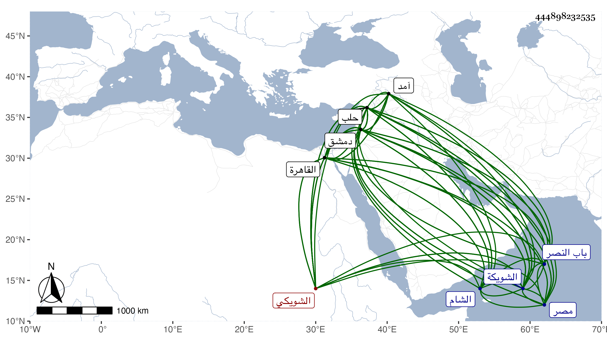

0902Sakhawi.DawLamic.ITO20230111-ara1.EIS1600.444898232535
Biography ID: 444898232535
121
تاج بن سيفا بن عبد الله الفارابي ثم الشويكي بضم المعجمة مصغر نسبة إلى الشويكة مكان ظاهر دمشق ويعرف بالتاج الوالي ، قال شيخنا في أنبائه : كان في ابتدائه يتعاطى خدمة الاكابر في الحاجة ، وذكر لي أنه كان يخدم الشهاب بن الجابي بدمشق وما يدل على أن مولده بعد الخمسين ، ثم اتصل بالمؤيد قبل سلطنته بعد أن اتصل بطيبغا القرمشي فخدمه وراج عليه فلما استقر في الملك ولاه الشرطة فباشرها وفوض إليه في أثناء ذلك الحسبة فكان في مباشرته لها ذاك الغلاء المفرط ثم في أواخر الدولة صرف عنها واستقر أستادار الصحبة ثم أعيد اليها في مرض موت المؤيد ، وحصل له في أوائل دولة الاشرف انحطاط مع استمراره على الولاية ثم خدم الاشرف فراج عليه أيضا وأضاف إليه مع الولاية المهمندارية وأستادارية الصحبة وشاد الدواوين والحجوبية ونظر الاوقاف العامة وغيرها وكان المباشر للولاية عنه غالبا أخوه عمر ثم صار بأخرة كالمستبد بها ثم صرف عنها فقط ، واستمر فيما عداها حتى مات بعلة حبس البول وقاسى منه شدائد وكان يعتريه قبل هذا بحيث أنه شق عليه مرة فخرجت منه حصاة كبيرة وأفاق دهرا ثم عاوده حتى كانت هذه القاضية ، ولم يتعرض السلطان لماله وترافع أخوه عمر وزوجته وقرر عليها خمسة آلاف دينار ثم أعفيت منها باعتناء أهل الدولة ، وكان حسن الفكاهة ذرب اللسان لا يبالي بقول وينقل عنه كلمات كفرية مختلطة بمجون لا ينطق بها من في قلبه ذرة من ايمان مع كثرة الصدقة والبر المستمر ، وأرخ وفاته في العشرين من صفر والصواب انها كما قال العيني في ليلة الجمعة العشرين من ربيع الاول سنة تسع وثلاثين ، وقال إنه صلى عليه من الغد خارج باب النصر ودفن بحوش له بحذاء تربة صوفية سعيد السعداء وكانت جنازته حافلة جدا ، قال وكان متواضعا متسع الكرم له وضع عند المؤيد جاء معه من الشام وتزايد وضعه عند الاشرف ، وولي ولايات كثيرة وكان أهل مصر يحبونه ولكن كان في لسانه زلق يرمى منه مهما جاء . وقال المقريزي كان أبوه قدم دمشق من بلاد حلب وصار من جملة أجنادها وممن قام مع منطاش فأخرج عنه الظاهر برقوق أقطاعه وولد له التاج بناحية الشويكة التي تسميها العامة الشريكة خارج دمشق ونشأ بدمشق في خمول وطريقة غير مرضية إلى أن اتصل بشيخ حين نيابته لها فعاشره على ما كان مشهورا به من اتباع الشهوات وتقلب معه في طوال تلك المحن وولاه وزارة حلب لما ولي نيابتها فلما قدم القاهرة بعد قتل الناصر فرج قدم معه في جملة أخصائه وندمائه فولاه في سلطنته ولاية القاهرة مدة أيامه فما عف ولا كف عن اثم ، وأحدث من أخذ الأموال ما لم يعهد قبله ثم تمكن في الأيام الاشرفية وارتفعت درجته وصار جليسا نديما للسلطان وأضيفت له عدة وظائف حتى مات من غير نكبة ، ولقد كان عارا على جميع بني آدم لما اشتمل عليه من المخازي التي جمعت سائر القبائح وأربت بشاعتها على جميع الفضائح . قلت وهو الذي شفع عند الاشرف في القضاة سنة آمد حتى أعفوا من المسير إليها ورسم باقامتهم في حلب بل وأنعم على المالكي والحنبلي لقتللهما بالنسبة للآخرين بمال وعد ذلك وأشباهه في مآثره .
